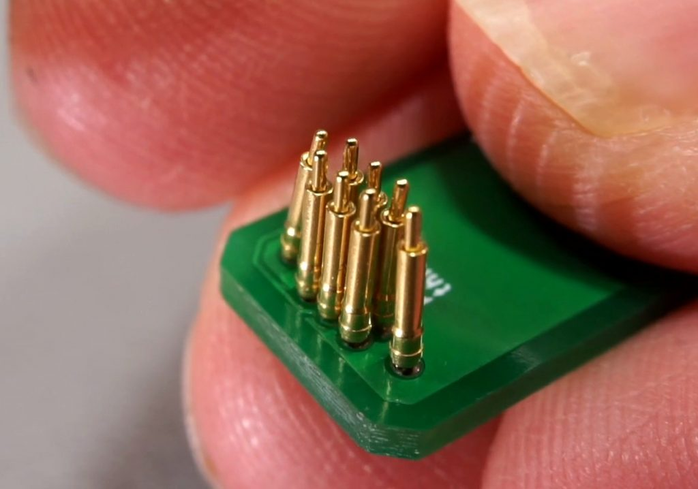
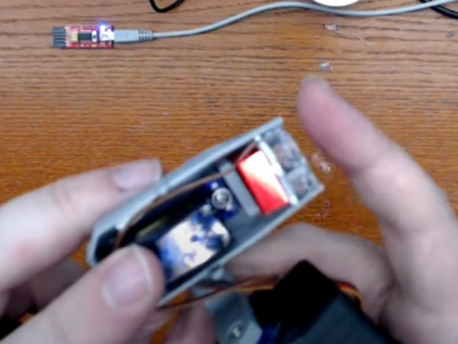
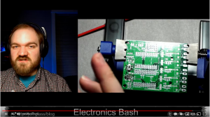
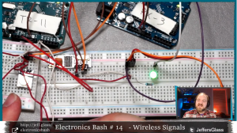

Video: Demilight Version 0.8
It's been quite awhile since the mini-moving light project (now renamed The Demilight) has been written up on the blog. The project was in hiatus for a few months while dove into the technical challenges of a new job, but as the job isn't keeping quite as busy at the moment (here in early summer 2020), it's back on the workbench. I've put together a video showcasing the current state of the project, now in version 0.8:
{{< youtube 4a-9JGK8H4I >}}
The video does a pretty decent job of capturing the current state of things. So what's next?
Firstly, the goofs I alluded to in the video that I consider to be must-fix items before the files are ready for primetime. Theu mostly have to do with the 3D-printed parts - I adjusted the access holes and programming slots from version 0.5 to 0.8, but I didn't do a great job double-checking everything, and things don't line up very well. That'll need another few test prints and some adjustment to alleviate the all the filing that's currently necessary.
I've also been having some issues with mechanical assembly - I've been using some M2 insert nuts to hold the case and case-lid together, and to secure the PCB into the case, but that doesn't seem to be a particularly good system. It's possibly my nuts and bolts are just really high-tolerance, but they're constantly cross-threading and not inserting all the way. I think a more robust solution is in order.
The other main error has to do with the footprint for the 5V buck-converter module - somehow, my pin placement is off by .2" on the PCB footprint, which makes the part overlap with the attachment points for the servos unless you bend the voltage-regulator's pins over. Not insurmountable, but really annoying. That'll have to get fixed in version 0.9. Once those two most-egregious errors are corrected, though, I think the unit will be decent enough to publish as a beta version.

It's a pretty simple part... how did I goof this up?
There are several more substantial improvements in the pipeline as well. In no particular order:
As I mention in the video, I'm working on a miniaturized programmer interface based on some little 0.05"-pitch pogo pins. The results, so far, have been mixed - I have been able to confirm that the interface is providing gnd/5V to the ATmega328, at least enough that its 16 MHz ceramic resonator is oscillating, but I can't seem to program the chips in-place. Further experiments will be necessary.

Some iterations of the Demilight have incorporated a heatsink to help manage the heat-output from the LED emitter chips. To be honest, I'm not sure how necessary it is - I would love to set up some tests with the unit running at its full 1 Amp current and see just how hot things get. Perhaps the first test would be in free-air, then inside the case in multiple orientations. I know from some tests I did on a livestream last summer that with enough heatsinking the LED stars can handle up to about 5 Amps, but they dump a huge amount of heat at the point.

If the heatsink comes back, should it still be in candy-apple red?
RGB or RGBW dimming capacity would be really neat - as spiffy as the pure-white versions are, there's something about color-changing light that feels like it would take this project to the next level. I would need to free up some more PCB space, and possibly move from a single-channel driver to a 3 or 4 channel driver, but finding those in the ~1A current capacity range seems a little tricky.
There are also a couple of purely aesthetic things which could get bumped up to something better. I've ordered some 1/4" white wire sleeving to take the place of the gaff tape covering the wires that run from head to base. And I need to invest a little time dialing in my 3D printer - after 3.5 years of printing, it's starting to show its age a little bit, and a little extra tightening and lubrication wouldn't be a bad idea.
So many of my projects during quarantine have focused on building my digital communication mediums - building out this video feels very much like a continuation of that skill-building. The weekly Arduino/Electronics classes I've been teaching for 15 weeks now have been a serious crash course in live digital video. That learning process deserves a write-up of it's own, but if you compare the following two frames from Episode 0 (testing) and Episode 14 (Wireless Signals), I think the improvements are pretty clear:

Epsiode one was.... pretty rough. The audio is really crunchy too - turns out I had two microphones on (lav and webcam) and they did unkind things together.

We've got things pretty well dialed in by now.
It's been a joy to build some more digital video skills putting this video together, like putting together a basic script, recording a voiceover, learning the editting, effects, and color-grading processes... it's been both fascinating and time-consuming. The video definitely has some rough edges, but I'm thinking of it as good-enough, and I'm excited to take what I've learned from this early creation and apply it to future videos. Much like the tiny-light itself, it's good to just make a thing, anything, a small thing, and iterate from there.